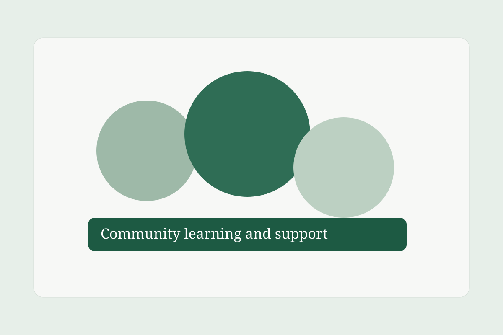
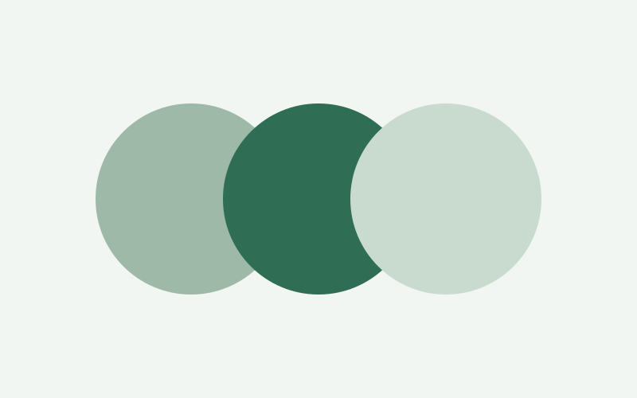

Mental Health
Foundational learning on stress, anxiety, emotional wellbeing, boundaries, and help-seeking.
Explore mental healthExplore trusted resources, conversations, learning materials and professional support designed to make mental health easier to understand.

MindfulPath brings together mental-health learning, social-issues awareness, guided training, community dialogue, and pathways to professional consultation. The goal is to help people build understanding before crisis and strengthen supportive cultures in homes, schools, and workplaces.
Read practical articles and e-books.
Join podcast and book-club conversations.
Practice with quizzes and Q&A.
Connect with trained professionals.
Foundational learning on stress, anxiety, emotional wellbeing, boundaries, and help-seeking.
Explore mental healthHow stigma, inequality, family systems, and workplace pressure shape wellbeing.
Read social issuesCurated books for individual learning and guided group discussion.
Browse libraryWeekly episodes featuring practitioners, educators, and lived experiences.
Listen nowShort practical courses for schools, communities, and teams.
View coursesDiscussion rooms and Q&A spaces with supportive moderation and reporting tools.
Join community
How to notice burnout patterns early and start practical recovery before things escalate.
Read articleCurrent book: Understanding Stress in Everyday Life. This week explores practical recovery routines for daily overload.
Understand key behavioral signs and how to respond with care and structure.

Language, bias, and silence can delay care. Learn constructive alternatives.
Use active listening and boundaries to support someone responsibly.

Host: Dr. M. Achieng · Duration: 32 min
A clear conversation about body signals, thought patterns, and practical self-support options.
Family Conversations Around Mental Health
Workplace Burnout: What Leaders Miss
Healthy Communication in Conflict
Use our assistant to quickly discover relevant articles, courses, and podcasts.
Open AssistantHelp me understand stress
Find resources about anxiety
What training courses are available?
Show me the latest podcasts
Select a counselor, choose availability, and proceed to secure M-PESA checkout.
Book consultationJoin rooms focused on study support, emotional wellbeing, and peer discussion.
Enter chatroom